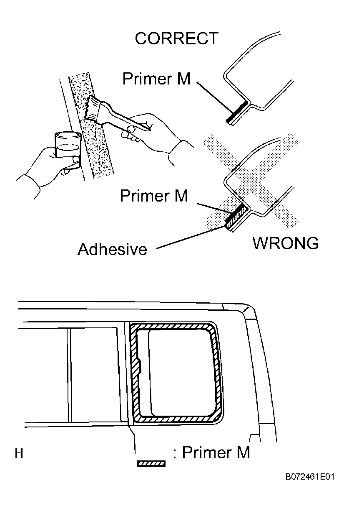
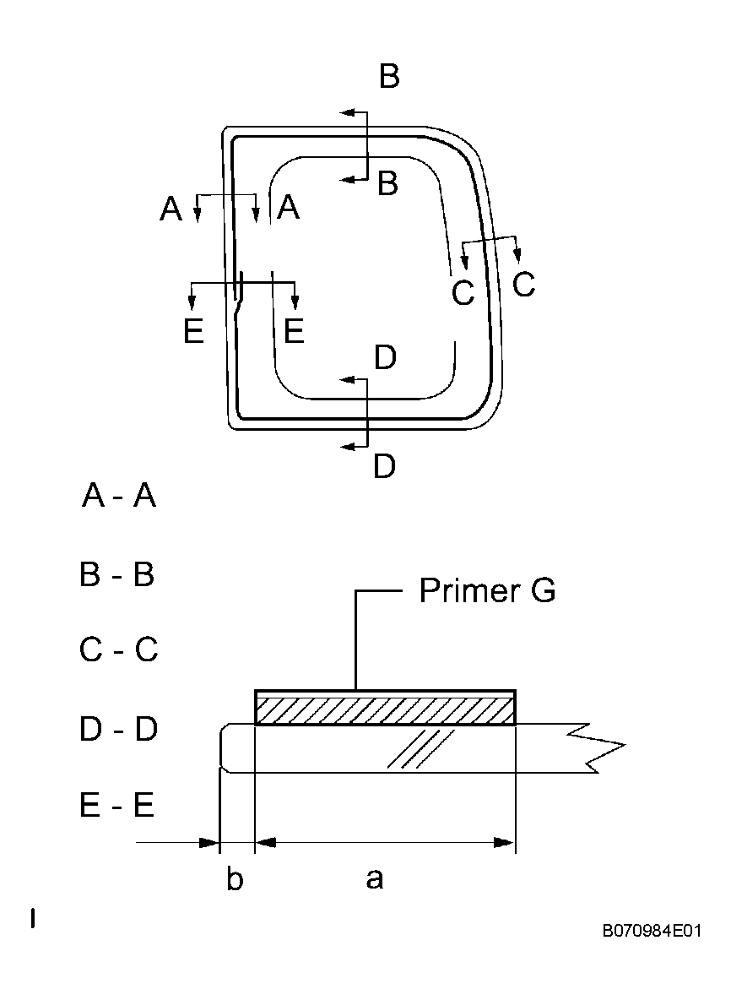

Quarter Window Glass: Installation
HINT:
- Use the same procedures for the LH side and RH side.
- The procedures listed below are for the RH side.
- A bolt without a torque specification is shown in the standard bolt chart (see SPECIFIED TORQUE FOR STANDARD BOLTS ).
- INSTALL NO. 1 QUARTER WINDOW GUIDE PIECE PIN
- Using a brush or sponge, apply Primer G to the installation part of the pins.
- Install new pins.NOTE:
- Allow the primer coating to dry for 3 minutes or more.
- Throw away any leftover primer.
- Do not apply too much primer.
Standard measurement
STANDARD MEASUREMENTArea Specified Condition a 40.0 mm (1.575 in.) b 40.0 mm (1.575 in.) c 37.0 mm (1.457 in.) d 42.0 mm (1.654 in.) e 11° f 46.4°
- INSTALL QUARTER WINDOW GLASS SPACER
- Using a brush or sponge, apply Primer G to the installation part of the spacers.
- Install new spacers.NOTE:
- Allow the primer coating to dry for 3 minutes or more.
- Throw away any leftover primer.
- Do not apply too much primer.
Standard measurement
STANDARD MEASUREMENTArea Specified Condition a 41.0 mm (1.614 in.) b 19.0 mm (0.748 in.) c 20.0 mm (0.787 in.) d 45.0 mm (1.772 in.) e 28.0 mm (1.102 in.) f 23.0 mm (0.906 in.) g 63.0 mm (2.480 in.) h 21.0 mm (0.827 in.) i 4° j 31°
- INSTALL QUARTER WINDOW ASSEMBLY RH

Courtesy of © TOYOTA, LICENSE AGREEMENT TMS1002- Using a brush, apply Primer M to the exposed part of the vehicle body.NOTE:
- Allow the primer to dry for 3 minutes or more.
- Do not apply primer to the adhesive.
- Throw away any leftover primer.
- Do not apply too much primer.
- Using a brush or sponge, apply Primer G to the contact surface of the quarter window glass.
Standard measurement
STANDARD MEASUREMENTItem Specified Condition A - A a 14.0 mm (0.551 in.) b 8.6 mm (0.338 in.) B - B a 14.0 mm (0.551 in.) b 5.0 mm (0.197 in.) C - C
D - Da 14.0 mm (0.551 in.) b 6.0 mm (0.236 in.) E - E a 22.0 mm (0.866 in.) b 8.6 mm (0.339 in.) 
Courtesy of © TOYOTA, LICENSE AGREEMENT TMS1002HINT:
If primer is applied to an area that is specified, wipe off the primer with white gasoline before it dries.
NOTE:- Allow the primer to dry for 3 minutes or more.
- Throw away any leftover primer.
- Do not apply too much primer.
- Apply adhesive to the quarter window glass.
Adhesive:
Part No. 08850-00801 or equivalent
- Cut off the tip of the cartridge nozzle as shown in the illustration.
Standard measurement
STANDARD MEASUREMENTArea Specified Condition a 8.0 mm (0.315 in.) b 12.0 mm (0.472 in.) c 13.0 mm (0.512 in.) d 12.0 mm (0.472 in.) e 13.0 mm (0.512 in.) f 15.5 mm (0.610 in.) HINT:
After cutting off the tip, use all adhesive within the time written in the table below.
Usage time frame
USAGE TIME FRAMETemperature Usage Time Frame 35°C (95°F) 15 minutes 20°C (68°F) 1 hour 40 minutes 5°C (41°F) 8 hours - Load the sealer gun with the cartridge.
- Apply adhesive to the quarter window glass as shown in the illustration.
- Cut off the tip of the cartridge nozzle as shown in the illustration.
- Install the quarter window glass to the vehicle body.
- Hold the quarter window glass in place securely with protective tape or equivalent until the adhesive hardens.
- Lightly press the front surface of the glass to ensure a close fit.
- Using a scraper, remove any excess or protruding adhesive.
HINT:
Apply adhesive onto the glass rim.
NOTE: Do not drive the vehicle within the time written in the table below.Minimum time
TIME REFERENCETemperature Minimum time prior to driving vehicle 35°C (95°F) 1 hour 30 minutes 20°C (68°F) 5 hours 5°C (41°F) 24 hours
- Using a brush, apply Primer M to the exposed part of the vehicle body.
- INSTALL ROOF SIDE GARNISH INNER RH (See INSTALLATION )
- INSTALL DECK TRIM SIDE PANEL ASSEMBLY RH (See INSTALLATION )
- INSTALL REAR SEAT 3 POINT TYPE BELT ASSEMBLY OUTER RH (See INSTALLATION )
- INSTALL REAR DECK TRIM COVER (See INSTALLATION )
- INSTALL BACK DOOR WEATHERSTRIP
- INSTALL DECK FLOOR BOX LH
- INSTALL DECK FLOOR BOX RH
- INSTALL NO. 1 DECK BOARD
- INSTALL NO. 2 DECK BOARD
- INSTALL REAR DOOR OPENING TRIM WEATHERSTRIP RH
- INSTALL REAR DOOR SCUFF PLATE RH (See INSTALLATION )
- INSTALL REAR SEATBACK HINGE SUB-ASSEMBLY RH (See REASSEMBLY )
- INSTALL CHILD RESTRAINT SEAT ANCHOR BRACKET SUB-ASSEMBLY (See REASSEMBLY )
- INSTALL REAR SEAT CUSHION WITH COVER PAD SUB-ASSEMBLY (See INSTALLATION )
- INSTALL REAR SEATBACK ASSEMBLY RH (See INSTALLATION )
- INSTALL REAR SEATBACK ASSEMBLY LH (See INSTALLATION )
- CHECK FOR LEAKS AND REPAIR
- Conduct a leak test after the adhesive has completely hardened.
- Seal any leaks with auto glass sealer.